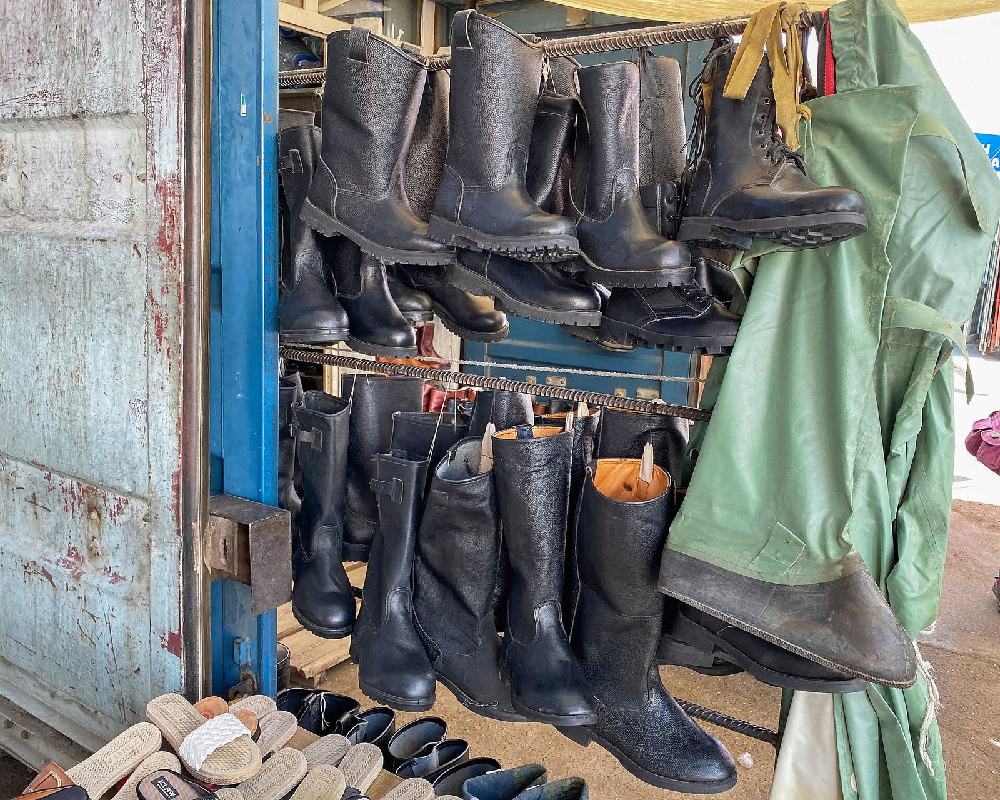
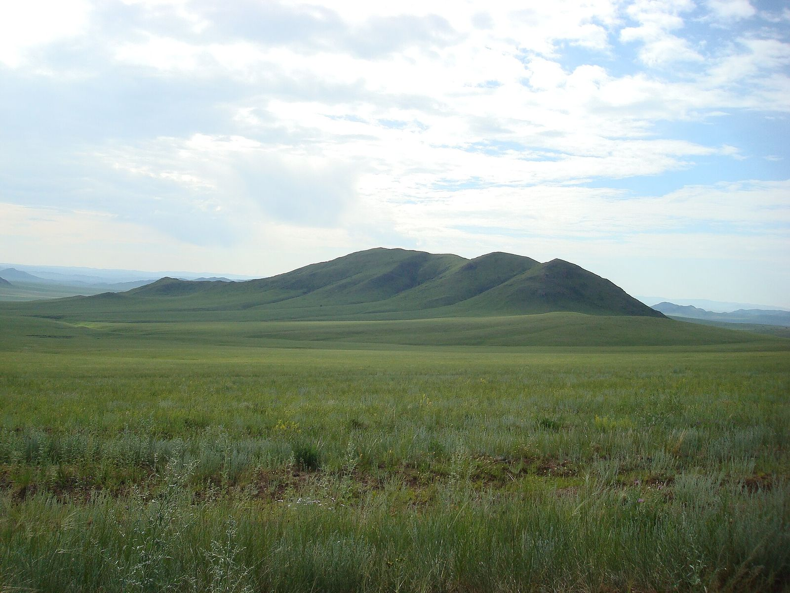
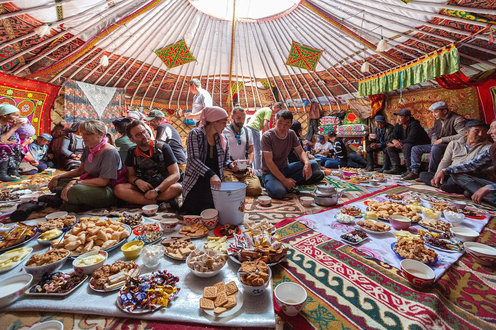
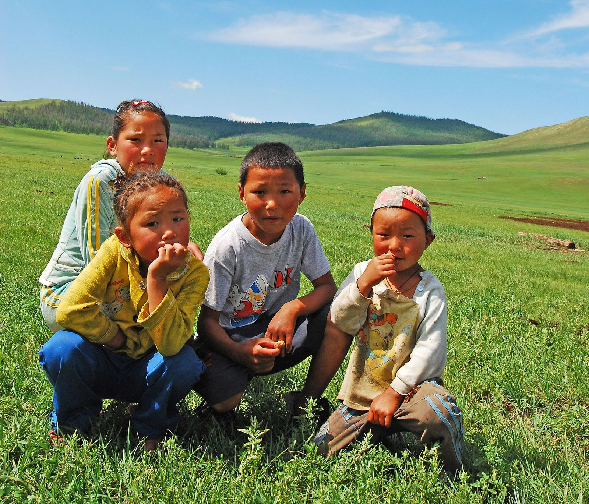
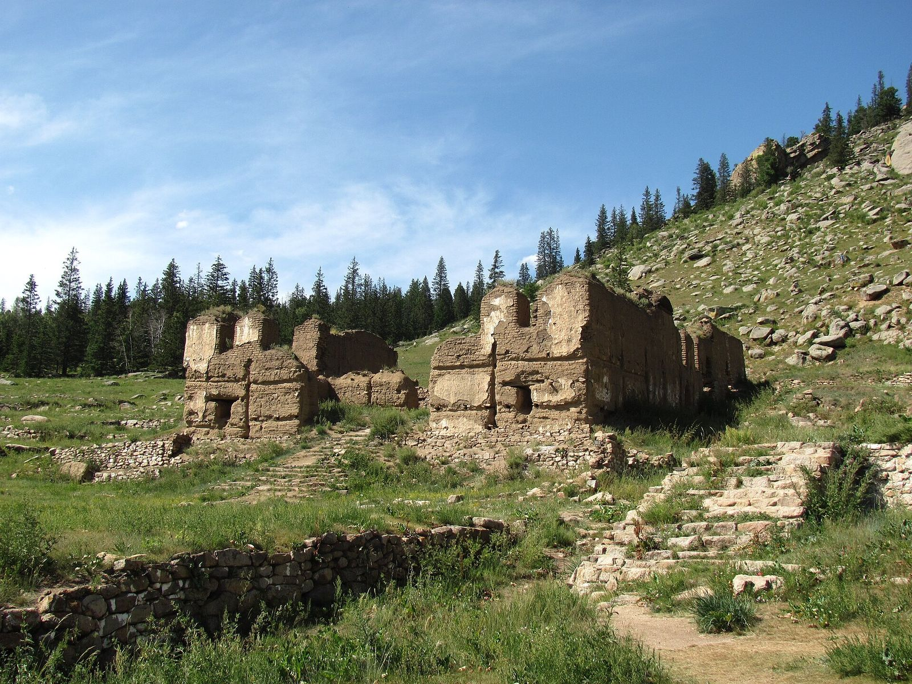

Хөдөлмөр эрхлэлт
Код 7820. Хөгжлийн бэрхшээлтэй иргэдийн хөдөлмөр эрхлэлтийг дэмжих үйл ажиллагаа.
2014 онд байгуулагдсан, улсын бүртгэлийн 8136629 дугаартай, ашгийн төлөө бус төрийн бус байгууллага. Хөдөлмөр эрхлэлт, нийгмийн оролцоо, мэдээлэл ба сургалт гэсэн гурван чиглэлээр ажилладаг.
Энэхүү вэбсайт нь байгууллагын бүртгэлийн мэдээлэл болон олон нийтийн эх сурвалжид баримтлагдсан ажлын үндсэн дээр бүтээгдсэн. Бид баталгаажаагүй мэдээлэл оруулахгүй — баталгаажаагүй газрыг «хүлээгдэж байна» гэж тодорхой тэмдэглэсэн.
Бидний тухай Холбоо барих
Төв аймгийн хөгжлийн бэрхшээлтэй иргэдийн холбоо нь 2014 оны дөрөвдүгээр сарын 17-нд улсын бүртгэлд бүртгэгдэж, Төв аймгийн хөгжлийн бэрхшээлтэй иргэдийн дуу хоолойг орон нутгийн түвшинд хүргэх зорилгоор эхэлсэн.
Бид тэргүүлэх байгууллагын тусламжийг хүлээхгүй, харин гишүүдийнхээ оролцоонд тулгуурласан, орон нутгийн түвшинд ажилладаг байгууллага юм.
Дэлгэрэнгүй уншихЭх сурвалж: opendatalab.mn — улсын бүртгэлийн өгөгдөл
Улсын бүртгэлд бүртгэгдсэн гурван чиглэл. Гурвуулаа 2014 оны дөрөвдүгээр сарын 18-нд бүртгэгдсэн.

Код 7820. Хөгжлийн бэрхшээлтэй иргэдийн хөдөлмөр эрхлэлтийг дэмжих үйл ажиллагаа.

Код 8211. Хөгжлийн бэрхшээлтэй иргэдийг нийгмийн амьдралд идэвхтэй оролцоход дэмжлэг үзүүлэх үйл ажиллагаа.

Код 9499. Хөгжлийн бэрхшээлтэй иргэдэд мэдээлэл, сургалт сурталчилгаа явуулах үйл ажиллагаа.
2023 оны 12 дугаар сарын 1
Зуунмод хотноо зохион байгуулагдсан уг чуулга уулзалтыг Төв аймгийн Засаг даргын тамгын газрын Нийгмийн бодлогын хэлтэс, аймгийн холбогдох байгууллагууд, Залуучуудын хөгжлийн төв, Дэлхийн зөн орон нутгийн хөтөлбөр болон манай холбоо хамтран зохион байгуулсан. 24 сумын 238 иргэн оролцсон.
2023 оны 7 дугаар сарын 26
Аймаг байгуулагдсаны 100 жилийн ойг тохиолдуулан хөгжлийн бэрхшээлтэй иргэдэд зориулсан «Аз жаргалын өргөө» төв нээгдсэн. Уг төвийг Засаг даргын санаачилгаар «Холт интернэйшнл» олон улсын байгууллагатай хамтран тохижуулсан бөгөөд манай холбоо төвд үйл ажиллагааны байртай.
3,300
Аймагт амьдардаг хөгжлийн бэрхшээлтэй иргэн, хүүхэд
285
Сургууль, цэцэрлэгт хамрагдаж буй сургуулийн насны хүүхэд (66%)
1,025
2023 онд аймгийн хэмжээнд шинээр бий болсон ажлын байр
34
Тусгай хэрэгцээт хүүхэдтэй ажилладаг, нэмэгдэл хөлс авдаг багш
Эх сурвалж: МОНЦАМЭ, 2023.11.10



Зуунмод сум — холбооны төв байрладаг газар. Зургууд нь байгууллагын өөрийн зураг биш.
Сайн дураараа ажиллах. Сургалт зохион байгуулах, арга хэмжээнд туслах, мэргэжлийн зөвлөгөө өгөх зэрэг олон боломж бий.
Хамтран ажиллах. Ажлын байр санал болгох, сургалт хамтран зохион байгуулах, төсөл хэрэгжүүлэх саналтай бол холбогдоорой.
Хандивлах. Хандивын дансны мэдээллийг байгууллагаас баталгаажуулсны дараа байрлуулна.
Холбоо барих